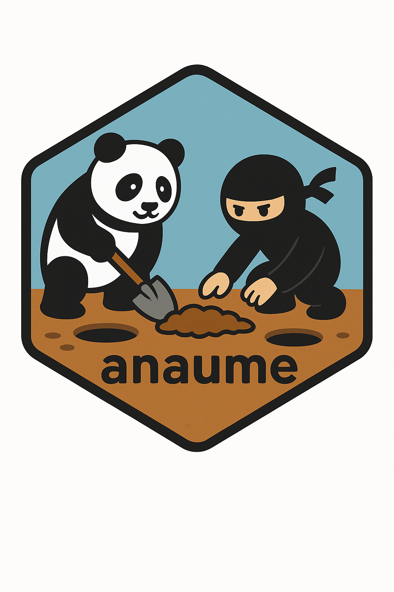

CRAN Submission Notes
このドキュメントは anaume を CRAN に提出する際に必要となる要件・手順・ 過去の対応内容を記録するためのものです。提出のたびに更新してください。
このファイルは
.github/配下にあるため.Rbuildignoreの^\.github$により CRAN ビルド (R CMD build) から自動的に除外されます。
0. CRAN 登録に特有の要件（Knowledge Share）
GitHub で R パッケージを公開するのと異なり、CRAN への登録には CRAN 独自の ポリシーと手続きが存在します。ここでは「CRAN 特有」で、かつ見落としやすい 要件を切り口ごとに整理します。各項目の末尾に一次情報（出典）を示します。
(A) メタデータ (DESCRIPTION) の要件
-
Titleは Title Case（各単語の頭を大文字）で、末尾にピリオドを付けない。 -
Descriptionは完全な文で記述し、ソフトウェア名・API 名・略語は初出時に 展開するか単一引用符で囲む。文は大文字で始め、ピリオドで終える。 -
Authors@Rで著者と役割を明示する。メンテナ (cre) はちょうど 1 名で、 実在する有効なメールアドレスが必須（確認メールの受信に使われる）。 -
Licenseは CRAN が認識する標準表記を用いる （tools:::analyze_license()でis_standardizable = TRUEになること）。 -
Versionは数値をドットで区切った形式（例0.1.0）。 - 出典: [Writing R Extensions §1.1 “The DESCRIPTION file”] (https://cran.r-project.org/doc/manuals/r-release/R-exts.html#The-DESCRIPTION-file)
(B) チェック結果の要件
-
R CMD check --as-cranが ERROR / WARNING ゼロであること（必須）。 -
NOTE は可能な限りゼロにする。残す場合は
cran-comments.mdで理由を説明。 - 新規提出では
New submissionNOTE は不可避（説明すれば問題ない）。 - 出典: [CRAN Repository Policy] (https://cran.r-project.org/web/packages/policies.html)
(C) 動作・環境の要件
- 複数プラットフォームで動作する必要がある（CRAN は Windows / macOS / Linux、かつ R-devel / R-release で自動チェックする）。 → 提出前に win-builder (devel + release) でのチェックを推奨（本書 §3-2）。
-
examples / tests / vignettes は妥当な時間内に完了すること。重い処理は
\donttest{}等で調整する。 -
外部リソース（URL・ファイル・ネットワーク）への依存は最小限にし、
DESCRIPTIONのURLは実在して応答するものだけを記載する。 - 出典: [CRAN Repository Policy] (https://cran.r-project.org/web/packages/policies.html)
(D) ファイル構成・サイズの要件
-
パッケージに含めてよいのは標準的なファイルのみ。開発用スクリプトや 生成物は
.Rbuildignoreで除外する（本リポジトリではinst/dev/等）。 - tarball はできるだけ小さく（目安 5 MB 未満）。大きなデータは別パッケージ化 や圧縮を検討する。
-
LICENSE全文の同梱ルールに従う（標準ライセンスは全文を同梱せず、DESCRIPTIONのLicense指定のみ。本書では.Rbuildignoreで除外済み）。 - 出典: [Writing R Extensions §1 “Creating R packages”] (https://cran.r-project.org/doc/manuals/r-release/R-exts.html#Creating-R-packages)
(E) 人的・手続き上の要件（CRAN 固有）
-
全著者 (
aut) の提出同意が必要（GitHub 公開にはない要件）。 - 提出後の確認メールのクリックで提出が確定する（本書 §5.4）。
-
新規パッケージは人手レビューがあり、軽微な指摘で再提出を求められることが 多い。指摘対応時は
Versionを上げて再提出する。 - メンテナは継続的なメンテナンス責任を負う（R の更新で生じる不具合への対応、 逆依存パッケージへの配慮など）。
- 出典: [CRAN Repository Policy] (https://cran.r-project.org/web/packages/policies.html)
0-2. §0 の要件を検証するツール / コマンド
§0 で挙げた要件の多く（特に A〜D）は、ツールで機械的に判定できます。 ここでは要件カテゴリごとに対応するツールを示します。
中核: R CMD check --as-cran
最も重要なツールです。--as-cran を付けると通常チェックに加えて CRAN 固有のポリシー検査が有効化されます。これ 1 つで §0 の A〜D の 大半を検査できます。
devtools::check(args = "--as-cran") # ラッパー（推奨）
# または
# R CMD check --as-cran anaume_0.1.0.tar.gz| §0 の要件 |
--as-cran での対応チェック項目 |
|---|---|
| (A) DESCRIPTION 形式 | checking DESCRIPTION meta-information |
| (A) Title Case / 文章 | checking CRAN incoming feasibility |
| (A) メール有効性 | checking CRAN incoming feasibility |
| (A) License 標準表記 | 非標準なら警告 |
| (B) ERROR / WARNING | 全チェック項目 |
| (C) 実行時間 |
checking examples / checking tests
|
| (C) 無効 URL |
checking URLs（--as-cran 時のみ） |
| (D) 非標準ファイル | checking top-level files |
| (D) tarball サイズ | checking installed package size |
要件別の補助ツール
| 要件 | ツール / コマンド | 用途 |
|---|---|---|
| (A) スペル・文章 | spelling::spell_check_package() |
Description・ドキュメントのスペルチェック |
| (A) License 標準表記 | tools:::analyze_license("...") |
is_standardizable = TRUE を確認 |
| (C) URL 検証 | urlchecker::url_check() |
DESCRIPTION/Rd/md 内の全 URL の応答を検証 |
| (C) 多環境動作 |
devtools::check_win_devel() / check_win_release()
|
Windows × R-devel/release（本書 §3-2） |
| (C) 多環境動作 | rhub::rhub_check() |
R-hub v2 で Linux/macOS/Windows 横断 |
| (B) 提出後の状況 | foghorn::cran_results("anaume") |
提出済みパッケージの CRAN チェック結果を取得 |
統合: リリース支援ツール
devtools::release() # 提出前チェックを総ざらいし対話的に提出まで導く
usethis::use_release_issue() # GitHub Issue にリリース用チェックリストを自動生成2. 既知の環境依存 NOTE / WARNING
ローカル（オフライン・ツール未整備の環境）では以下が出ることがありますが、 いずれも パッケージ本体の問題ではなく、CRAN の実環境では解消 されます。
| 種別 | メッセージ | 原因 |
|---|---|---|
| WARNING | 'qpdf' is needed for checks on size reduction of PDFs |
ローカルに qpdf 未導入 |
| NOTE | Found the following (possibly) invalid URLs: .../anaume/ |
ネットワーク/SSL 証明書失効チェックの制限。URL 自体は有効 |
| NOTE | unable to verify current time |
インターネット/NTP 未接続 |
| NOTE | New submission |
新規パッケージでは必ず付く（正常） |
3. ローカルでの R CMD check --as-cran
開発ツール（Rtools / Pandoc / qpdf）が正しく揃った環境であれば、以下だけで チェックできます。
devtools::check(args = "--as-cran")補足: 環境が未整備の場合の回避策
ここで述べる Rtools 非互換や Pandoc 未検出は 特定の開発 PC の環境問題 であり、パッケージ自体の問題ではありません。本来は Rtools / Pandoc を 正しく導入すれば上記 1 行で済みます。環境を整備できない場合の一時的な 回避策として以下を記録します。
Rtools がインストール済み R のバージョンと非互換だと devtools::check() は ビルド段階で失敗することがあります。その場合は R CMD build / R CMD check を直接呼び出し、Pandoc は別途導入済みのもの（例: RStudio 同梱）を環境変数で 指定します。
# Pandoc のパスを環境変数に設定（導入済みの場所に合わせる）
$pandocDir = "<pandoc.exe のあるディレクトリ>"
$env:RSTUDIO_PANDOC = $pandocDir
$env:PATH = $pandocDir + ";" + $env:PATH
# tarball をビルド（vignette 込み、PDF マニュアルは省略）
R CMD build . --no-manual
# as-cran チェック
R CMD check anaume_0.1.0.tar.gz --as-cran --no-manual3-2. win-builder でのチェック（CRAN と同等の Windows 環境）
ローカル環境に依存せず、CRAN が実際に使う Windows 環境でチェックできます。 tarball がサーバーへアップロードされ、結果はメンテナのメール宛に届きます （通常 15〜30 分、混雑時は数時間）。CRAN は提出時に devel・release の両方で チェックするため、両方を実行しておくことを推奨します。
devtools::check_win_devel() # 開発版 R (R-devel)
devtools::check_win_release() # 安定版 R (R-release)
check_win_devel() と check_win_release() の違い
| 関数 | 使用する R | 目的 |
|---|---|---|
check_win_devel() |
R-devel（次期リリースの開発版） | 将来の R で新たに発生する警告・非互換を先回りで検出する。CRAN が新規/更新パッケージで特に重視する |
check_win_release() |
R-release（現在の安定版） | 一般ユーザーが実際に使う環境で問題なく動くことを確認する |
（参考）check_win_oldrelease()
|
R-oldrelease（1 つ前の安定版） | 旧バージョンの R との後方互換を確認する（任意） |
devel と release の両方がクリーンであれば、CRAN の自動チェックで R バージョン起因の指摘を受ける可能性を大きく減らせます。
4. 過去に対応した必須修正（履歴）
0.1.0 初回提出準備（2026-10）
| 箇所 | 問題 | 対応 |
|---|---|---|
DESCRIPTION |
maintainer (cre) メールがダミー (first.last@example.com) |
実アドレスに変更 |
DESCRIPTION |
Authors@R が複数 person() を c() で囲まず構文エラー |
c( ... ) で囲んだ |
DESCRIPTION |
person() 第3引数にメールを置き middle に誤割当 |
email = を明示指定 |
DESCRIPTION |
空の email 文字列 ""
|
引数ごと省略 |
DESCRIPTION |
フィールド間に空行があり build/roxygenise が失敗 | 空行を削除 |
vignettes/anaume.Rmd |
\VignetteIndexEntry{Gett started}（タイポ） |
Get started に修正 |
vignettes/anaume.Rmd |
見出し Anaysis（タイポ）、空見出し、TODO プレースホルダ |
修正・整理 |
5. CRAN への提出手順
5.1 提出の前提条件（提出ボタンを押す前に）
- 「1. 提出前チェックリスト」がすべて完了している
-
cran-comments.mdが最新のR CMD check/ win-builder 結果と一致している -
メンテナ (
cre) のメールアドレスで確認メールを受け取れること （shunsuke.goto@novartis.com。企業メールの場合、CRAN からの外部メールが スパム/隔離されないか事前に確認する）
5.2 共著者の同意（CRAN ポリシー）
DESCRIPTION の aut（著者）全員が提出に同意している必要があります。 本パッケージは以下の 5 名が関与しています。提出前に全員の合意を得てください。
- Shunsuke Goto（cre, aut）
- Tomoyuki Namai（aut）
- Hiro Kosako（aut）
- Yuichi Nakajima（aut）
- Hiroki Yamanobe（aut）
5.3 提出の方法
いずれか一方で提出します。
方法 A: R から提出（推奨）
devtools::submit_cran()実行すると tarball がビルドされ、CRAN の提出フォームへ送信されます。 cran-comments.md の内容が自動的にコメント欄へ添付されます。
方法 B: Web フォームから提出
- tarball を作成する（「3. ローカルでの手順」参照）
- https://cran.r-project.org/submit.html を開く
- パッケージ名・バージョン・メンテナ情報・tarball をアップロード
-
cran-comments.mdの内容をコメント欄に貼り付ける
5.4 提出後の対応
確認メールのクリック 提出直後、メンテナ宛に確認メール（subject に
CRAN submission等）が届く。 本文のリンクをクリックして提出を確定する。これを行わないと受理されない。自動チェックの結果を待つ CRAN の incoming でマルチプラットフォームの自動チェックが走る。 問題があればメールで通知される。
人手レビュー 新規パッケージ（New submission）は CRAN チームによる手動レビューが入る。 数日〜1 週間程度かかり、軽微な指摘で 1〜2 往復することが多い。
指摘への対応 指摘が来たら、該当箇所を修正し、
DESCRIPTIONのVersionを上げ、cran-comments.mdに対応内容（Resubmission）を追記して再提出する。
6. 参考リンク
- CRAN Repository Policy: https://cran.r-project.org/web/packages/policies.html
- Writing R Extensions: https://cran.r-project.org/doc/manuals/r-release/R-exts.html
- R Packages (2e) – Releasing to CRAN: https://r-pkgs.org/release.html
- Win-builder: https://win-builder.r-project.org/